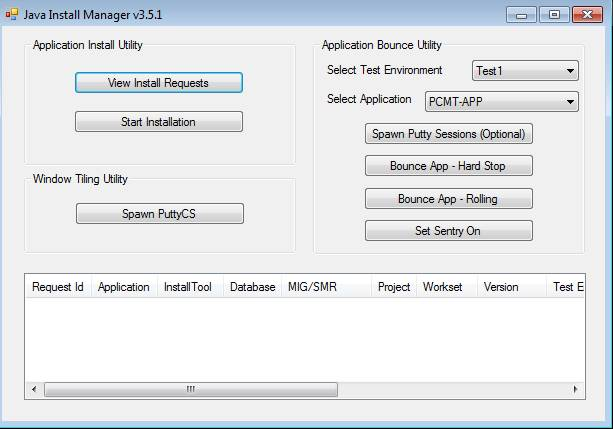
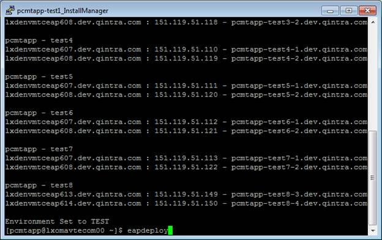
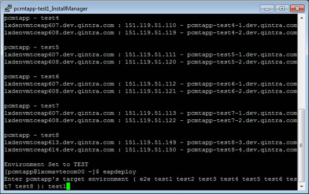
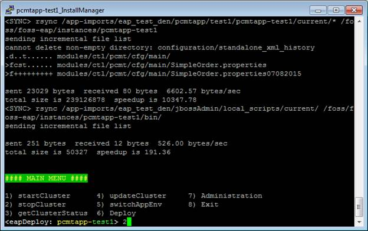
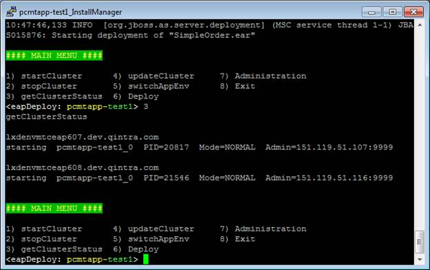

- First make sure to put request into 'Work in Progress'
- Launch Java Install Manager Tool and select the Environment and Application to be bounced. And click on Spawn Putty Sessions.
- Java Install Manager will spawn necessary terminal windows. Once the windows are spawned go to the Install Manager window and type eapdeploy to launch the FOSS EAP script.
- The script will launch and ask you for the environment to execute against. In this case the request is for test1
- The script main menu screen is displayed from here you can bounce the server cluster as well as Deploy application files and Administrate the cluster. Use option 2 to stop the cluster.
- Make sure that cluster is stopped using option 3)getClusterStatus.
- Use 1)StartCluster option to start and the cluster and use option 3 to get getClusterStatus will ping the servers and display their status on screen. You want to see a ‘Running’ status for each server in the cluster.
- Once the servers are up go back to Inventory page and verify that all the test URLs function as expected. As long as they do you may now close out the request.




